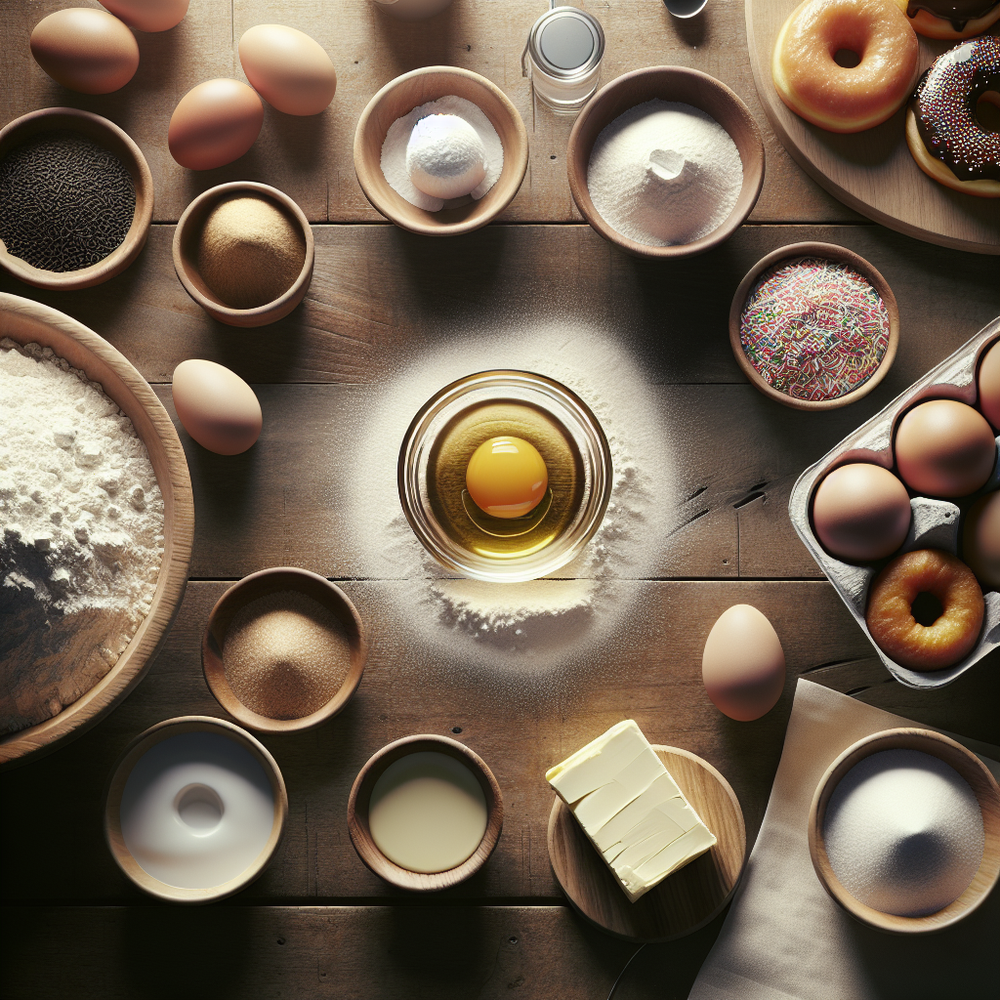

Origins of Donuts
The origins of donuts can be traced back to Dutch settlers in early America, who made "olykoeks" or oily cakes. These deep-fried treats were the precursors to modern donuts.
Donuts have a rich and fascinating history, evolving over centuries across cultures into the beloved treat enjoyed worldwide today.
The origins of donuts can be traced back to Dutch settlers in early America, who made "olykoeks" or oily cakes. These deep-fried treats were the precursors to modern donuts.
The iconic hole in the center of donuts is credited to Hanson Gregory, an American ship captain in the mid-19th century, who claimed it allowed the donuts to cook more evenly.
Today, donuts are a versatile dessert found worldwide with countless flavors, toppings, and forms. They are celebrated in pop culture, festivals, and enjoyed by people of all ages.